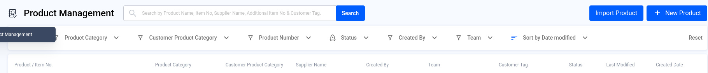
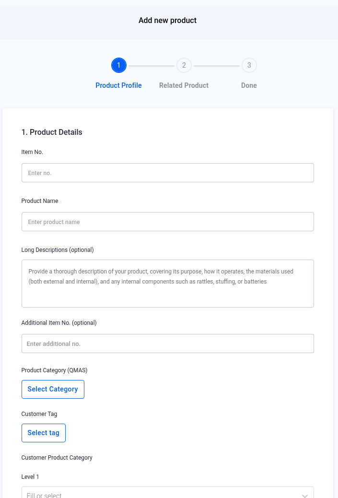
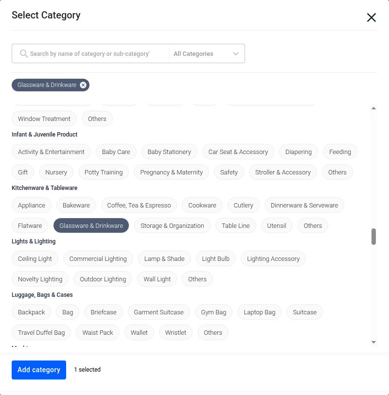
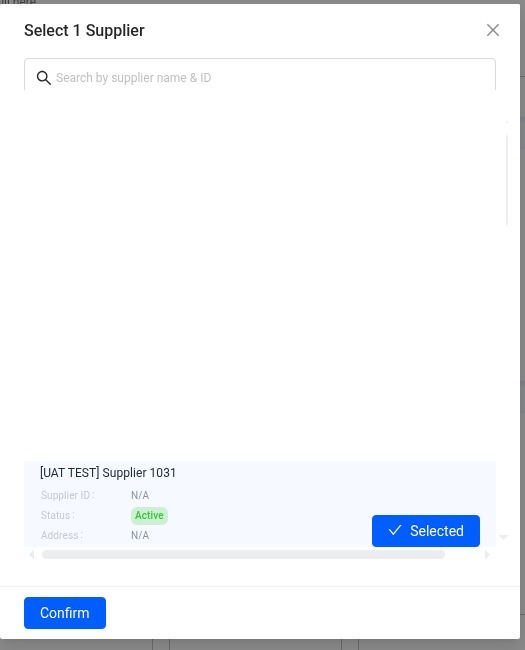
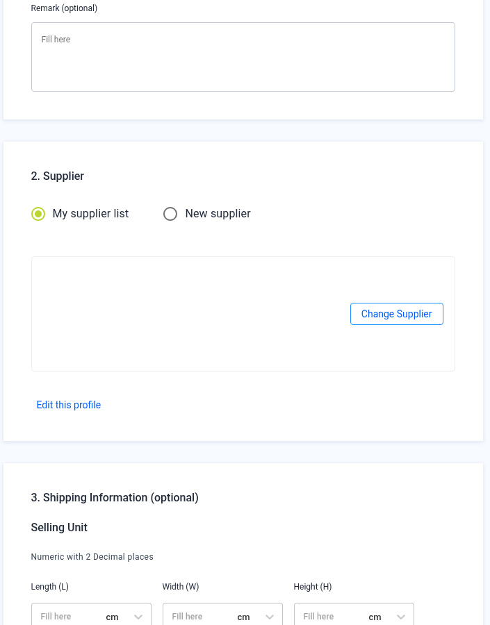
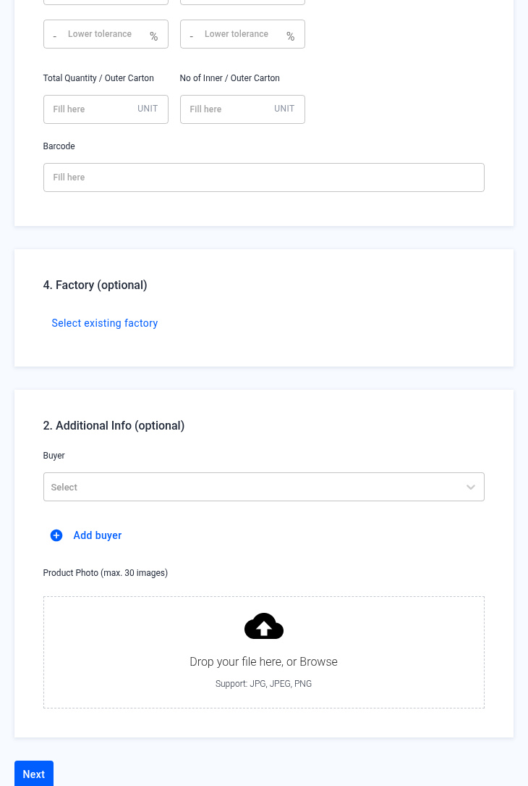
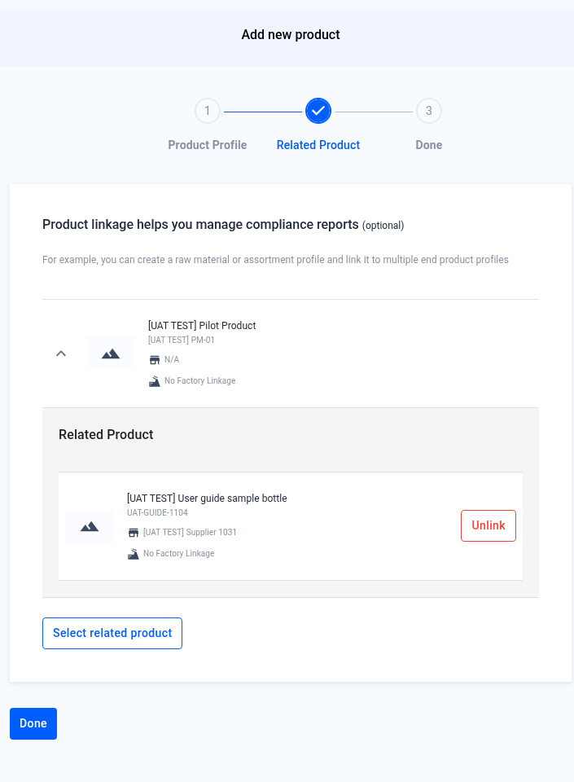
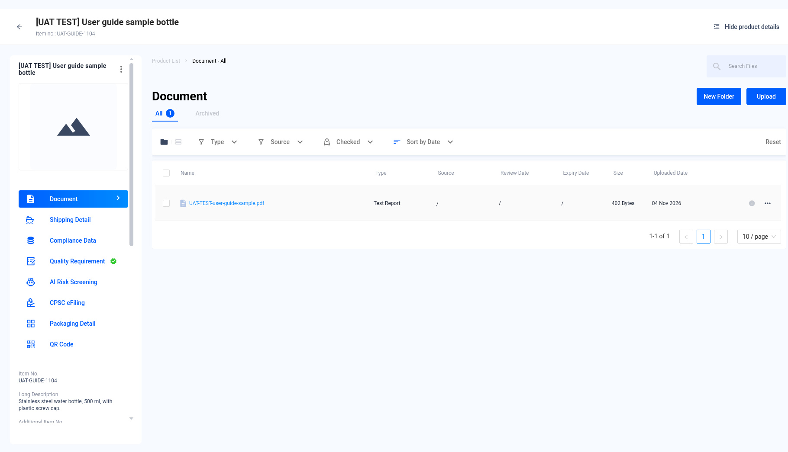
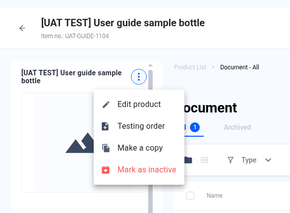
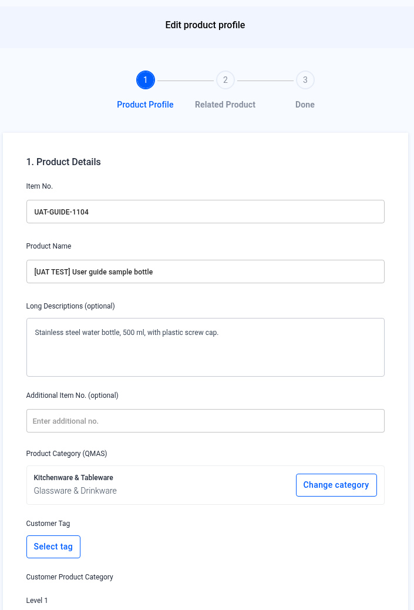

Product Management — Create and Edit a Product
Add a product profile to QMAS so you can attach documents, compliance data, testing and eFiling to it.
Screenshot slots: 10 reviewed, 1 explicitly not captured, 0 still pending privacy review.
Overview
- Open Product Management and click + New Product.
- Product Profile: fill in product details, then choose a supplier. Shipping information, factory and additional info are optional.
- Related Product (optional): link related products, then click Done.
- The product appears at the top of the Product Management list. Open it to see the product profile.
- To change it later, open the product, click ⋮ next to the name, then Edit product.
Step-by-step
1. Open Product Management
In the left menu, open Product Management. Click + New Product at the top right. To add many products at once, use Import Product.
Filter the list with Product Category, Customer Product Category, Product Number, Status, Created By and Team. Sort by Date modified changes the order. Reset clears the filters.

2. Product Profile — product details
The Add new product wizard opens. Under 1. Product Details, fill in:
- Item No. and Product Name (required).
- Long Descriptions (optional): purpose, materials and internal parts such as batteries or stuffing.
- Additional Item No. (optional).
- Product Category (QMAS): click Select Category.
- Customer Tag, Customer Product Category (Level 1–3) and Remark (optional).

In Select Category, search by name (for example “drinkware”), click the category, then click Add category.

3. Product Profile — supplier
Under 2. Supplier, choose My supplier list and click Select supplier, or choose New supplier to add one here.
In the pop-up, click Select on one supplier, then Confirm.

The supplier card appears. Use Change Supplier to pick another one, or Edit this profile to update the supplier.

4. Product Profile — optional sections
- Shipping Information: size, weight, tolerance and barcode for the selling unit, inner carton and outer carton.
- Factory: click Select existing factory.
- Additional Info: choose a Buyer (or Add buyer) and upload up to 30 product photos (JPG, JPEG, PNG).
Click Next.

5. Related Product (optional)
Product linkage helps you manage compliance reports. For example, link a raw material or an assortment to several end products. Click Select related product, or skip this step. Click Done. Unlink removes a product from this step.

6. Done — find your product
QMAS shows “Product added” and returns to the Product Management list. The new product is at the top.
The screenshot of that new row was not captured, because it would require creating a real product. The placeholder is not a picture of a finished create.
Not captured
File name: 08-product-added.jpg
Not captured. A real product was not created for this screenshot, so this placeholder is not confirmation of a completed create.
Click the product to open its profile. From the left menu of the profile you can manage Document, Shipping Detail, Compliance Data, Quality Requirement, AI Risk Screening, CPSC eFiling and Packaging Detail.
The left menu also includes QR Code.

7. Edit, copy or deactivate a product
On the product profile, click ⋮ next to the product name:
| Option | What it does |
|---|---|
| Edit product | Opens the same wizard with your saved details. Change them, then click Next and Done. |
| Testing order | Starts a Product Testing order for this product. |
| Make a copy | Creates a new product with the same details. |
| Mark as inactive | Sets the product to inactive. |


Tips
FAQ
- How do I create a new product in QMAS?
- Go to Product Management (https://qmas.icw.io/product/list), click + New Product, fill in Product Profile, then click Next and Done. Direct link: https://qmas.icw.io/add-product
- How do I edit a product?
- Open the product from the Product Management list, click ⋮ next to the product name, then Edit product.
- Can I add many products at once?
- Yes. Click Import Product on the Product Management list.
- Where do I submit eFiling or add compliance data for a product?
- Open the product profile and use CPSC eFiling or Compliance Data in its left menu.
Help Center additions and remaining gaps
This section adds Help Center material and named gaps. It does not replace the steps above.
How these labels are used
- Source-documented — written in the original Help Center. The last-edited date is given. That does not by itself prove the current QMAS UI.
- Dev-verified — confirmed on qmas-dev.icw.io during guide work.
- Gap — named as missing or too thin. Not current behaviour until checked on dev.
Reviewed screenshots remain 56 of 98. Forty-two inventory slots are still pending. Six supplementary images are not part of the 98. Unreviewed screenshots were not copied.
Dev-verified — list filters (2026-11-09)
The list filters are already in the steps above: Product Category, Customer Product Category, Product Number, Status, Created By, Team, sort, and Reset. The reviewed list screenshot shows those filters with no data rows.
Optional Factory and Additional Info (buyer, up to 30 product photos) are already in the wizard steps.
Source-documented — Product Information Pack (last edited 2026-11-04)
Source: Manage your QMAS Product Information Pack, https://app.notion.com/p/3a2b2d2eeedc42388ab6fc997070df61. The November 2026 create steps follow the same path as this page.
Import Product: the Help Center intro says “To add many products at once, use Import Product.” The Product Profile FAQ already says to download the ICW template, fill it in, and upload it. A full multi-step import walkthrough is still missing. Do not invent extra import steps.
The 2024 setup guide still says “top menu bar, select PRODUCT MANAGEMENT”. Prefer the current left menu and this page.
Remaining gaps
- Full Import Product wizard screenshots and field notes.
- List Export Data, row-select / bulk toolbar, and search. Only the filters above are dev-verified.
- Further Related Product linkage examples. Unlink is already named on the reviewed step 2 screenshot.
- Section numbering, stepper tick, and Title Case bugs are filed separately. Match the fixed UI once it ships. Do not invent the fix.
Help Center reconciliation 2026-11-13 (HKT). Original Help Center not edited. No Dify upload.